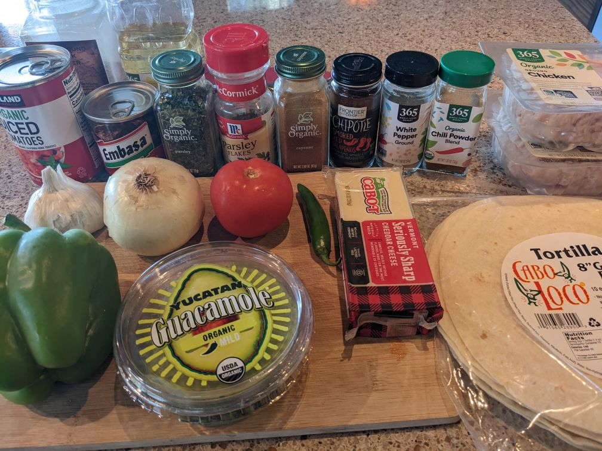
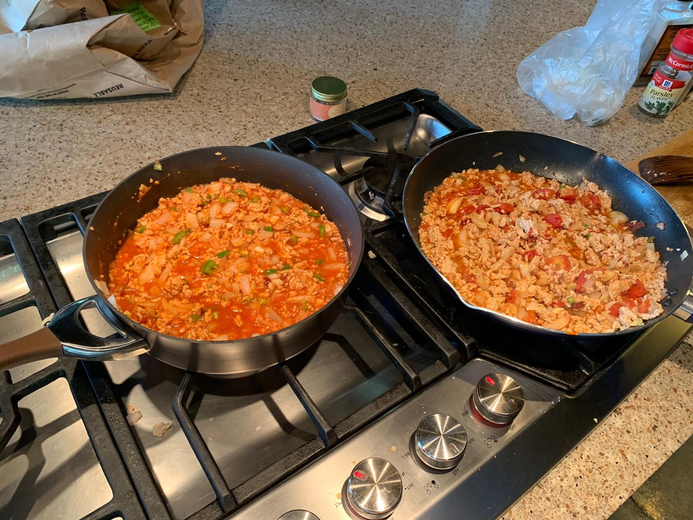
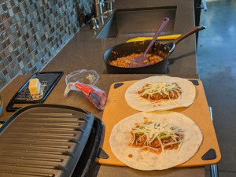
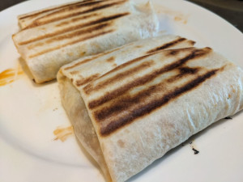

Adobo Taco
   
Ingredients: (ordered by usage)
- Ground turkey or chicken, onion, garlic
- Chipotle peppers in adabo sauce, tomatoe sauce, salt, chipotle smoked red jalapenos, parsley, cayene, chilli powder
- Tortillas, cheese, guacamole
How to make it:
- Add a little bit of oil on a skilet, add chicken or turkey and wait a few minutes until cooked.
- Add onion and garlic.
- After a few minutes add everything else.
- Lay everything on a tortilla, add cheese and guacamole, wrap it and grill for a few minutes.